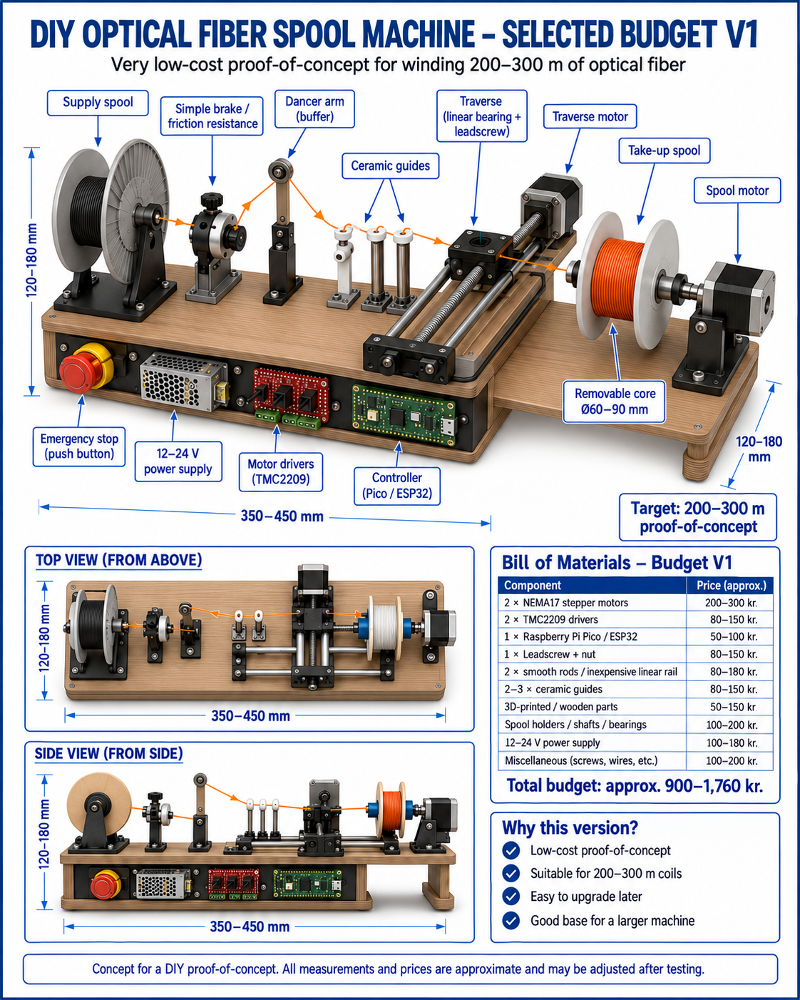
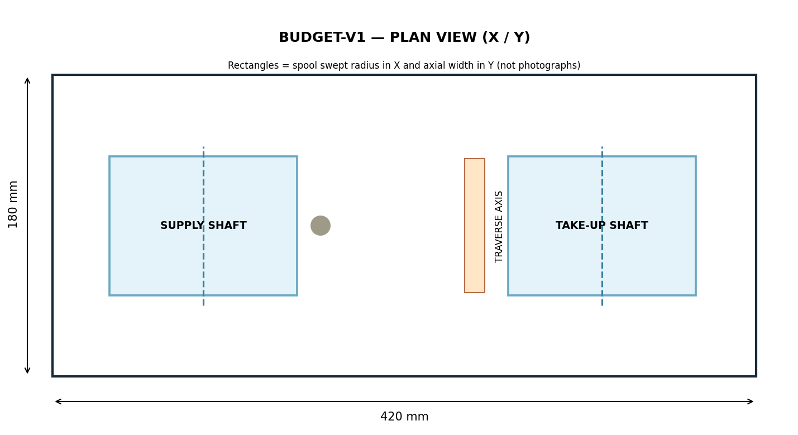
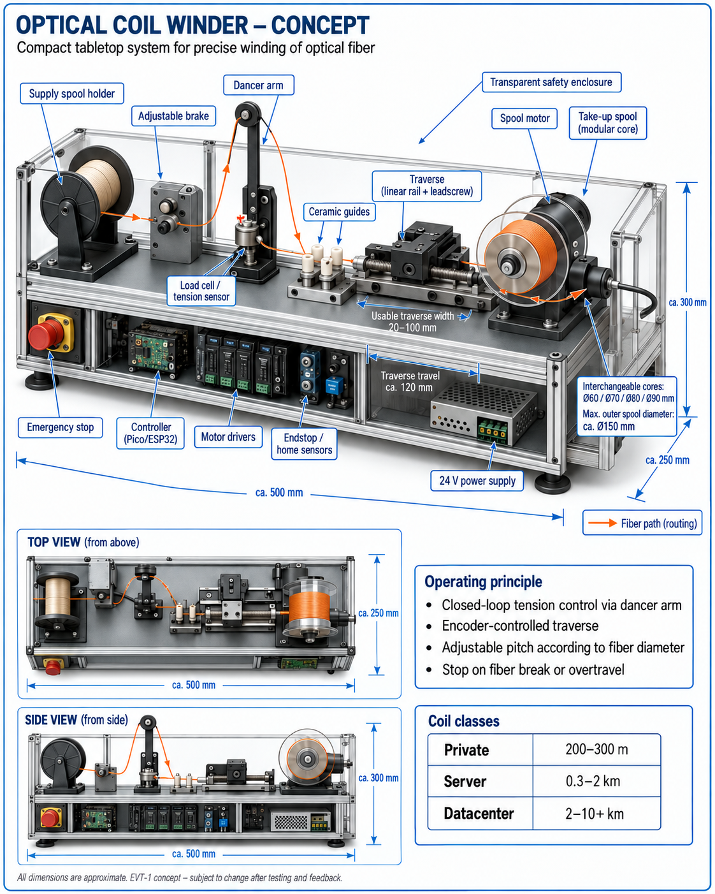
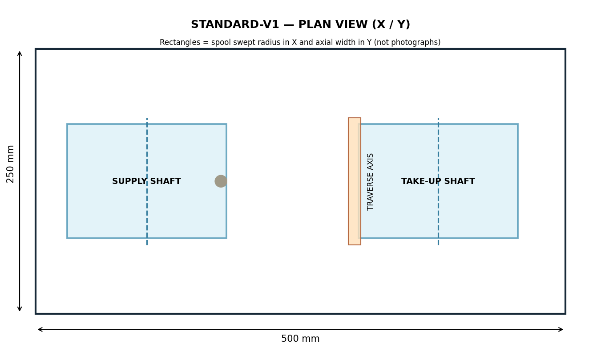

Budget V1
200–300 m
Example 0.9 mm buffered-fiber design objective

English-adapted concept image, not a built machine. Poster values are unverified design targets; see the engineering BOM and notes.

Separate nominal CAD rendering; physical fit not verified
420 × 180 mm base · Ø60/112 mm spool · 75 mm winding width · ~390 m ideal geometric model.
Engineering build notes
Standard / Premium V1
Up to 10 km*
*0.25 mm coated fiber only, geometry unverified physically

English-adapted concept image, not a built machine. Poster values are unverified design targets; see the engineering BOM and notes.

Separate nominal CAD rendering; physical fit not verified
500 × 250 × 300 mm envelope · Ø90/150 mm spool · 100 mm width · ~11.1 km ideal geometric model.
Engineering build notes